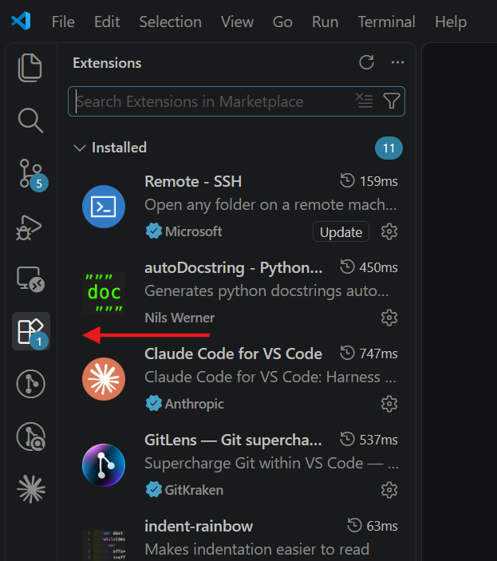
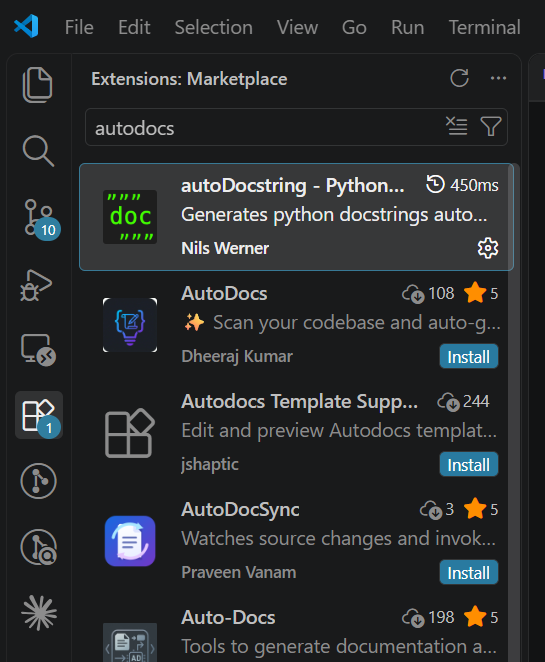
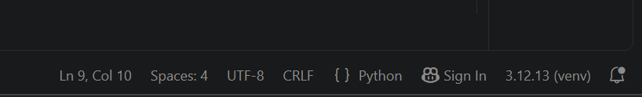
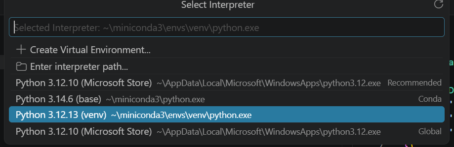
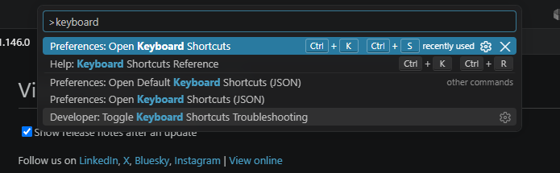

Preparación del entorno de trabajo
Buenas prácticas en Python
Instalar una extensión
Abrir el panel de extensiones → buscar el nombre → "Install"

autoDocstring

Entornos virtuales
Uno por proyecto: evita conflictos de dependencias
Crear
python -m venv venv
Activar
.\venv\Scripts\Activate.ps1
Instalar un paquete
pip install requests
Desactivar
deactivate
Un proyecto ya existente
Remove-Item -Recurse -Force venv
python -m venv venv
.\venv\Scripts\Activate.ps1
pip install -r requirements.txt
Vincular Python con VS Code

Si el entorno no aparece listado

Buscar cualquier atajo
Paleta de comandos → "keyboard shortcuts"
